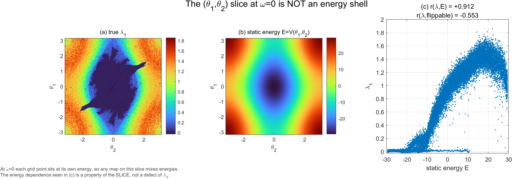
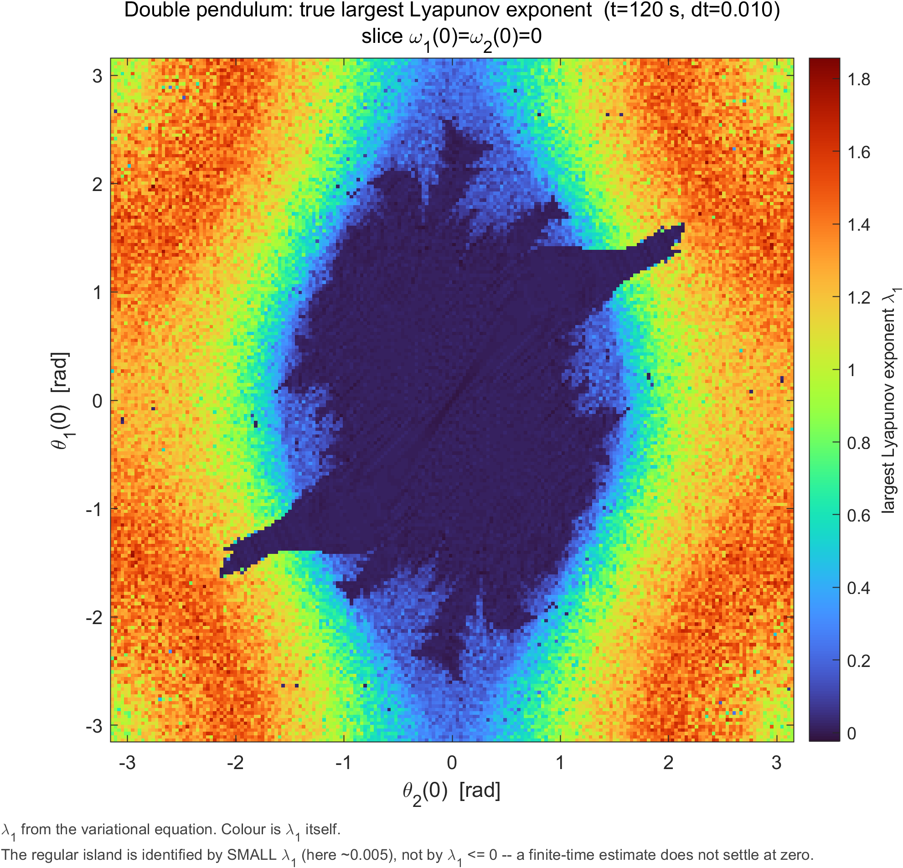
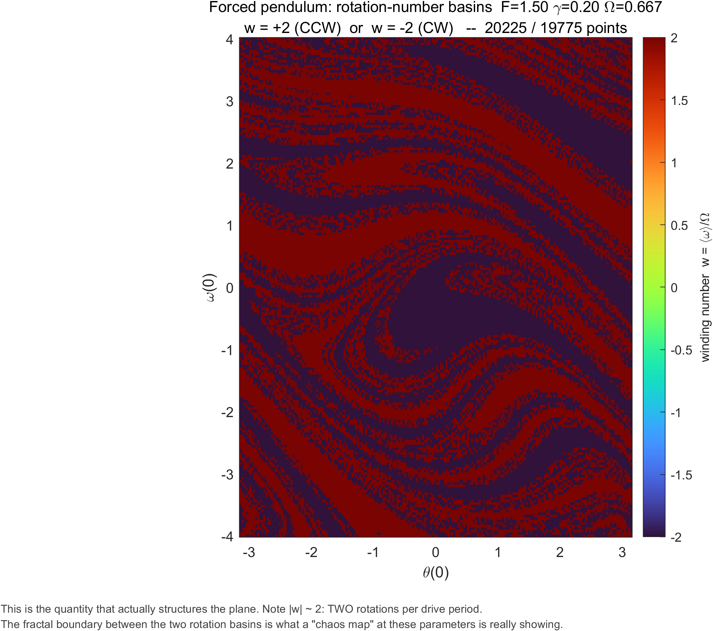
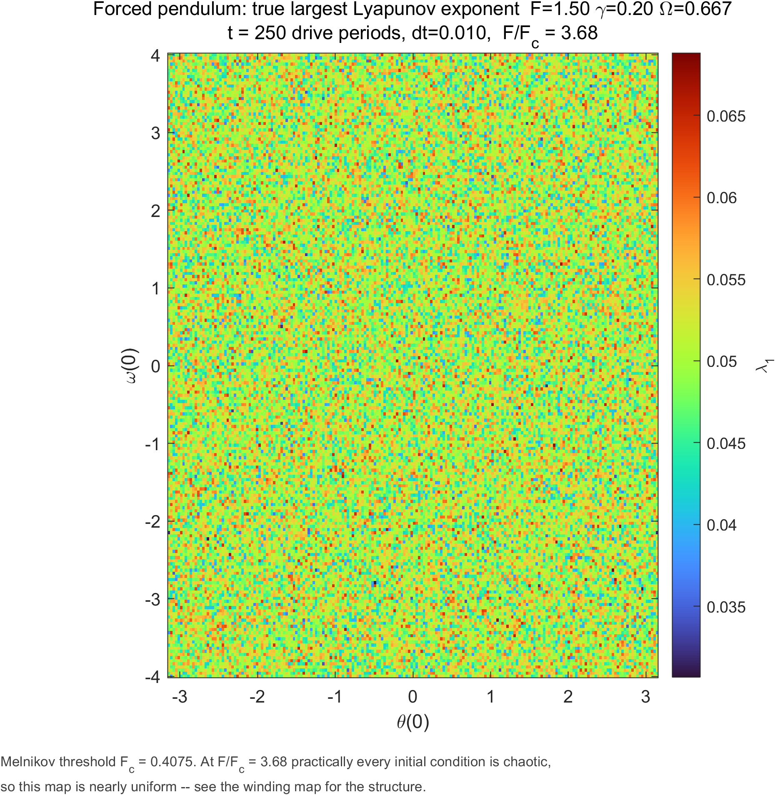
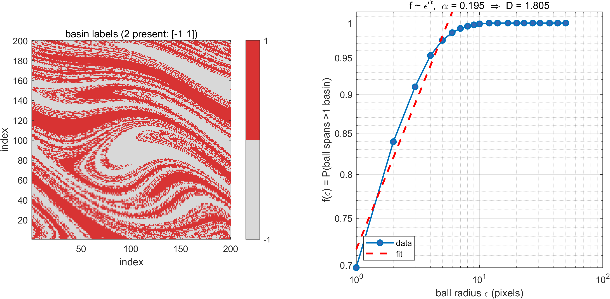
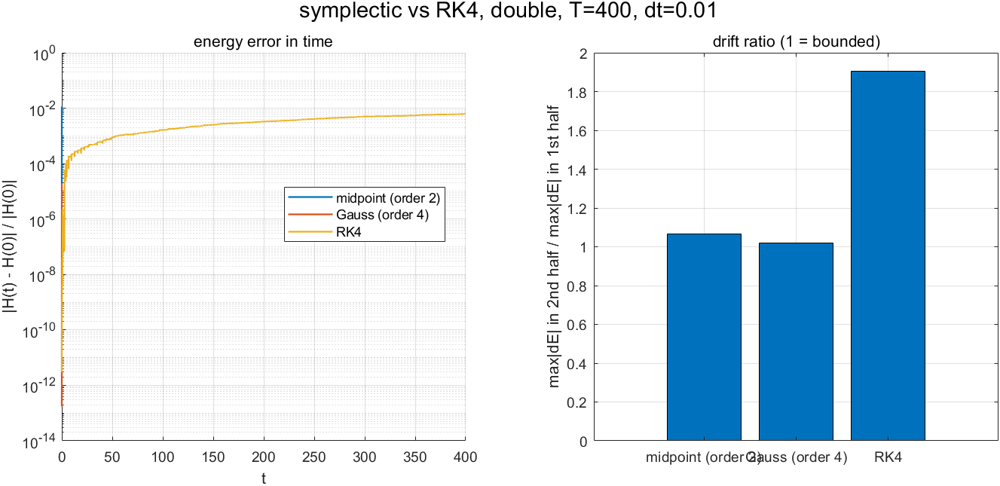
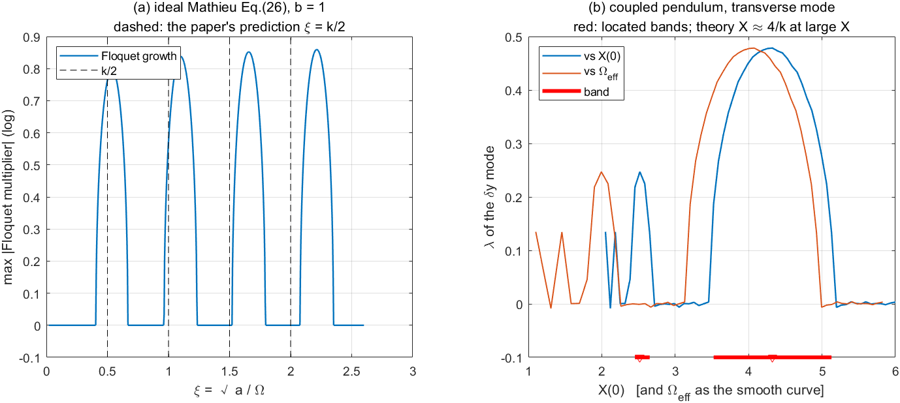
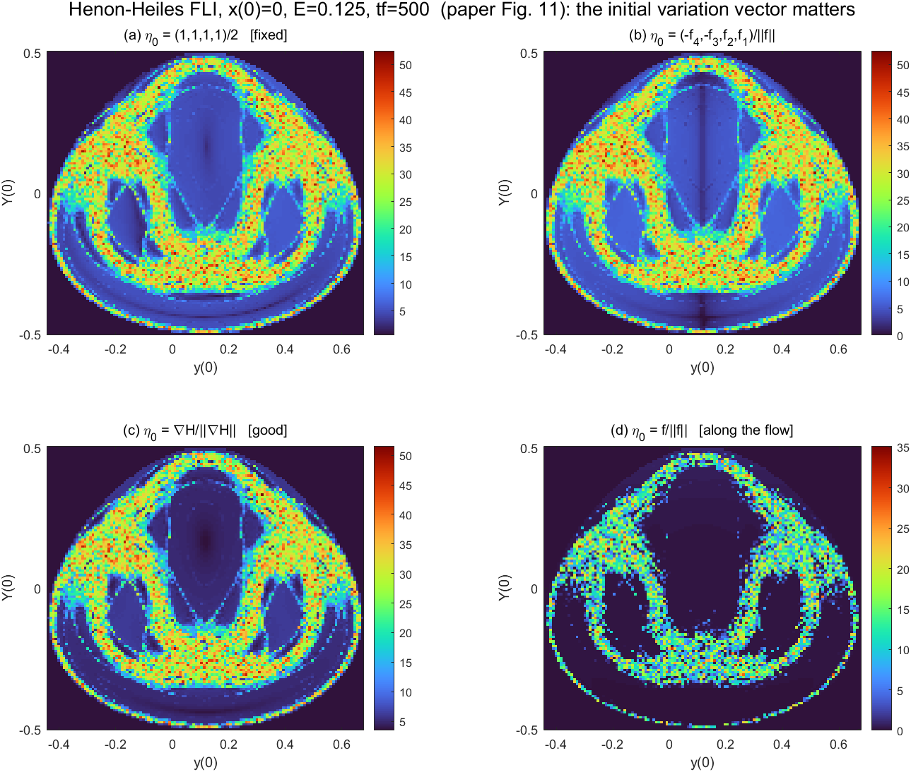

验证计算核心
在 MATLAB 中运行测试套件，先确认数值实现。
cd dp_v2
addpath(genpath(pwd))
run_all_tests
每幅图回答一个具体问题。受迫摆要并读 Lyapunov 与 winding；双摆切片要把能量混叠作为几何背景。

固定初始角速度为零，以有限时间最大 Lyapunov 指数着色；规则区应按量级判断，不用正负号硬阈值。

旋转数区分顺/逆向锁频吸引子，呈现单看混沌强度时容易遗漏的结构。

与 winding 地图互补：回答轨道分离快慢，而不是初值落入哪个吸引子。

由不确定指数标度估计边界复杂度；拟合只在网格覆盖有效标度区间时有意义。

比较有界振荡与随时间漂移；不是宣称每一步辛方法都比 RK4 更准确。

连接解析 Mathieu 失稳带与数值 Lyapunov 指数，提供可独立检验的结构。

图库还包含第二幅文献关联图、振幅代理量对照和参数扫描；完整图注、计算设置及边界条件见报告与 dp_v2/gallery。
物理计算与图形样式分离。完整运行保存 MAT 结果，随后可以只改图、重画图、重建报告，而不重复昂贵积分。生成器读真实 summary，关键字段缺失就明确失败。
正式重算成本可能达到数十分钟至数小时。先跑验证，再选择精度与分辨率；不要为了页面展示而伪造或平滑科学数据。
在 MATLAB 中运行测试套件，先确认数值实现。
cd dp_v2
addpath(genpath(pwd))
run_all_tests该步骤执行积分并写入 gallery MAT 缓存及 PNG。
make_gallery('N',200)复用已缓存的数值数据，不重新计算物理量。
make_gallery('N',200,'figuresOnly',true)需要 Python 与 SciPy；从仓库根目录执行。
python dp_v2/gen/gen_report.py
python dp_v2/gen/gen_manual.py
python dp_v2/gen/verify_manual.py指标不是可互换的“混沌滤镜”。动力学维数、耗散性和扫描截面会改变该问什么、以及答案应如何解释。
采用变分方程与最大 Lyapunov 指数；辛指标用于长时间结构分析。初始角平面固定角速度为零，因此混合不同能量。
Lyapunov 指数度量轨道分离；winding number 识别旋转吸引子。二维切空间中的 GALI/SALI 会出现系统性误判，不作为主判据。
规则轨道有限时间指数可略正或略负。报告误分类与网格设置，盆地维数也只在解析度足够时解释。